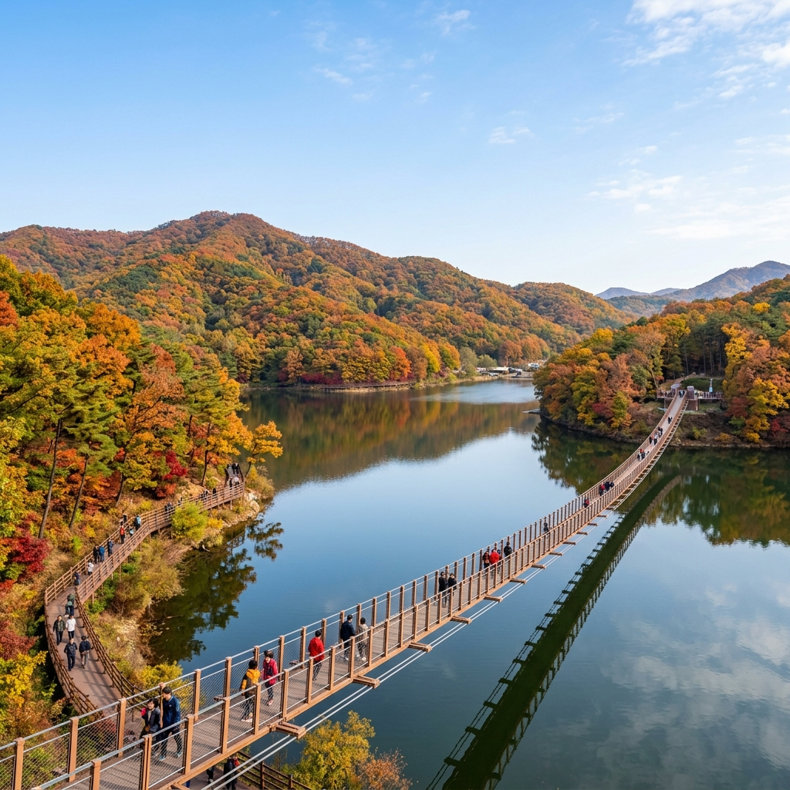
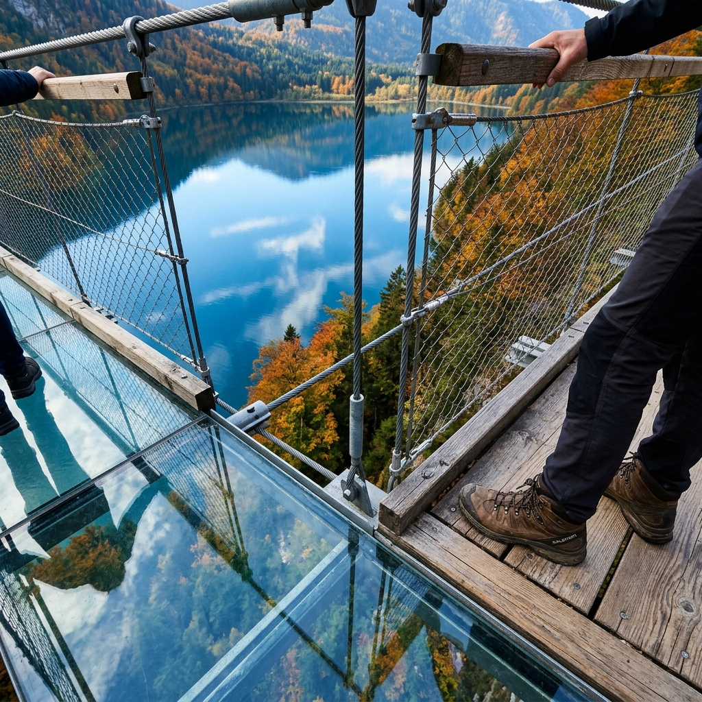

파주 마장호수 출렁다리 가을 둘레길 당일치기 — 공영주차장 요금 비교와 4.1km 수변 산책로 소요시간 체크리스트
서울 근교 가을 드라이브와 수변 힐링 명소로 손꼽히는 파주 마장호수는 220m 길이의 아찔한 흔들다리와 잔잔한 호수를 둘러싼 4.1km 무장애 데크 둘레길이 어우러져 사계절 내내 사랑받는 수도권 대표 나들이 코스입니다.
가을철 마장호수는 호수를 둘러싼 보령산과 마장산 자락이 오색 단풍으로 물들기 시작하며 잔잔한 수면에 단풍 그림자가 반영되어 걷는 내내 눈부신 가을 풍경을 선사합니다.
제1주차장부터 제7주차장까지 위치에 따라 요금 체계와 출렁다리까지의 도보 거리가 크게 달라 주말 주차 전략이 필수적이며, 카누·카약 수상 레저 이용법부터 4.1km 순환 산책로의 구간별 소요시간, 베이커리 카페 연계 동선까지 방문객이 꼭 알아야 할 핵심 정보를 상세히 안내해 드립니다.

파주 마장호수 출렁다리와 잔잔한 수변 둘레길 풍경 / AI 제작 이미지
01 | 파주 마장호수 출렁다리 운영시간과 가을 수변 산책 핵심 요약
파주 광탄면에 위치한 마장호수는 원래 농업용 저수지로 조성되었으나, 2018년 아시아 최장급(개통 당시) 보도용 현수교인 출렁다리와 수변 생태공원을 조성하면서 연간 수백만 명이 찾는 수도권 최고의 수변 관광지로 거듭났습니다.
출렁다리는 하절기(3월~10월) 기준 매일 오전 9시부터 오후 6시까지 무료로 개방되며, 안전 관리를 위해 마감 20분 전인 오후 5시 40분까지 입장이 완료되어야 합니다.
호수 주변을 순환하는 4.1km의 수변 둘레길은 계단이나 턱이 없는 완만한 무장애 목재 데크로 연결되어 있어 유모차나 휠체어, 어르신들도 어려움 없이 호숫가를 산책할 수 있는 것이 가장 큰 매력입니다.
가을 시즌인 9월 말부터 10월에는 호수변을 따라 가을바람이 시원하게 불어와 걷기 여행에 최적의 환경을 제공하며, 수면에 비치는 산 그림자와 물오리 떼의 유영이 평화로운 정취를 더해줍니다.
호수 자체는 연중무휴 24시간 개방되어 있어 이른 아침 물안개가 피어오르는 고요한 둘레길 산책도 가능하지만, 출렁다리 도하는 반드시 운영 시간 내에만 가능하므로 방문 계획 시 유의해야 합니다.
02 | 제1~제7 공영주차장 위치별 요금 비교와 주말 만차 회피 전략
마장호수 나들이에서 가장 중요한 핵심 포인트는 바로 주차장의 위치와 요금 체계를 파악하는 것입니다.
마장호수 주변에는 파주시 시설관리공단에서 운영하는 공영주차장 7개소가 분산되어 있으며, 주차장 번호에 따라 출렁다리와의 거리 및 요금이 다릅니다.
출렁다리와 전망대 카페가 가장 가까운 곳은 제1주차장과 제2주차장이지만, 주말에는 오전 9시 30분 전후로 만차가 되어 주차 대기 행렬이 길게 늘어섭니다.
반면 제3주차장부터 제7주차장은 출렁다리까지 둘레길을 따라 도보로 10분~25분 정도 이동해야 하지만, 주차 진입이 수월하고 여유로운 산책을 즐기기에 좋습니다.
| 주차장 명칭 |
주차 요금 |
출렁다리 도보 거리 |
혼잡도 및 추천 대상 |
| 제1공영주차장 |
소형 2,000원 (정액) |
도보 약 3분 |
가장 혼잡 / 거동 불편자, 영유아 동반 추천 |
| 제2공영주차장 |
소형 2,000원 (정액) |
도보 약 5분 |
혼잡 / 전망대 엘리베이터 인접 |
| 제3공영주차장 |
소형 2,000원 (정액) |
도보 약 10분 |
보통 / 캠핑장 및 둘레길 북측 산책로 진입 용이 |
| 제4~제7공영주차장 |
소형 2,000원 (일부 무료/정액) |
도보 15분~25분 |
비교적 여유 / 주말 둘레길 완주 코스 이용객 추천 |
주차 요금은 소형차 기준 1일 2,000원(대형 4,000원) 정액제로 운영되어 장시간 머물러도 요금 부담이 전혀 없습니다.
경차, 저공해 차량, 장애인, 국가유공자는 50% 감면 혜택을 받을 수 있으며, 사전 무인정산기를 이용하면 출차 대기 시간을 획기적으로 줄일 수 있습니다.
03 | 길이 220m 마장호수 출렁다리 제원과 흔들림 체험 안내
마장호수 출렁다리는 총길이 220m, 폭 1.5m의 보도 현수교로, 지주 없이 와이어와 케이블만으로 호수 양쪽 수변을 연결하여 탁 트인 개방감을 자랑합니다.
다리 중앙으로 걸어 들어갈수록 보행자들의 발걸음에 맞춰 상하좌우로 기분 좋은 흔들림이 발생하여 짜릿한 스릴을 온몸으로 체감할 수 있습니다.
교량 중간 구간에는 길이 18m의 방탄 강화유리 바닥(스카이워크)과 철망 그레이팅 바닥이 설치되어 있어 발아래로 넘실거리는 호수 물결을 직접 내려다보는 아찔한 경험이 가능합니다.
내풍 설계가 철저히 적용되어 초속 30m의 강풍과 규모 7.0의 지진에도 견딜 수 있도록 안전하게 시공되었으며, 성인(70kg 기준) 1,280명이 동시에 다리 위에 머물러도 안전한 하중 지지력을 갖추고 있습니다.

출렁다리 중앙부 투명 강화유리 바닥 체험 구간 / AI 제작 이미지
비가 오거나 강풍주의보가 발효되는 등 기상 악화 시에는 안전사고 예방을 위해 출렁다리 통행이 일시적으로 제한될 수 있으므로, 날씨가 흐린 날에는 파주시청 공지사항이나 관리사무소를 통해 사전 개방 여부를 확인해야 합니다.
하이힐이나 스틱, 우산 끝으로 유리 바닥을 긁지 않도록 주의해야 하며, 반려동물은 이동 가방이나 유모차에 태운 상태에서만 통행이 가능합니다.
04 | 전 구간 무장애 데크 4.1km 수변 둘레길 코스별 소요시간
출렁다리를 건너 호수 반대편으로 넘어가면 호수 전역을 타원형으로 한 바퀴 감싸고 도는 4.1km 수변 둘레길 탐방이 본격적으로 시작됩니다.
전 코스가 단차가 거의 없는 친환경 목재 데크로 조성되어 있어 가벼운 발걸음으로 산책하기에 그만이며, 성인 보통 걸음 기준으로 약 1시간에서 1시간 20분 정도 소요됩니다.
둘레길 코스는 크게 출렁다리 북측 숲길 구간과 남측 수변 데크 구간으로 나뉩니다.
북측 코스는 숲속 그늘이 풍부하여 피톤치드를 마시며 고요한 숲속 힐링을 즐길 수 있고, 남측 코스는 탁 트인 호수 조망과 함께 출렁다리 전경을 가장 아름답게 바라볼 수 있는 포토스팟들이 이어집니다.
🚶 마장호수 둘레길 추천 4.1km 완주 코스
· 출발 (0.0km) : 제1·2주차장 및 전망대 카페에서 출발하여 출렁다리 도하 (소요시간 약 10분)
· 호수 서측 숲길 (1.2km) : 보령산 자락을 따라 이어지는 완만한 그늘 데크길 걷기 (소요시간 약 25분)
· 호수 남측 댐마루 (2.5km) : 마장호수 댐 제방길을 지나며 호수 전체 파노라마 조망 (소요시간 약 20분)
· 호수 동측 데크로드 (3.8km) : 물 위를 걷는 듯한 수상 데크길을 따라 출렁다리 뷰 감상 (소요시간 약 25분)
· 도착 (4.1km) : 전망대 광장 분수대 복귀 및 휴식 (총 순수 도보 시간 약 80분)
중간중간 벤치와 쉼터, 야외 화장실이 적절히 배치되어 있어 힘들이지 않고 여유롭게 쉬어가며 가을 호수의 정취를 온전히 음미할 수 있습니다.
05 | 마장호수 수상 레저 카누·카약·오리배 이용 요금 및 탑승 팁
둘레길을 걷는 것 외에 물 위에서 직접 노를 저으며 마장호수의 가을을 즐길 수 있는 수상 레저 시설도 큰 인기를 얻고 있습니다.
마장호수 수상레저 계류장은 제2주차장 아래 수변에 마련되어 있으며, 카누, 카약, 전동 보트, 오리배 등 다양한 무동력·친환경 수상 기구를 운영합니다.
탑승 요금은 2인승 카약 기준 30분에 15,000원, 3~4인승 수상자전거 및 패밀리 전동보트는 20,000원~30,000원 선으로 형성되어 있습니다.
모든 탑승객은 안전요원의 지도하에 구명조끼를 필수로 착용해야 하며, 탑승 전 간단한 패들 조작법과 안전 수칙 교육을 이수한 후 호수로 나아가게 됩니다.
호수 한가운데에서 올려다보는 출렁다리의 웅장한 아치형 교각과 가을 단풍이 물든 호반의 모습은 육지 데크길에서 바라보는 것과는 전혀 다른 신선한 시각적 감동을 선사합니다.
주말에는 대기 인원이 많을 수 있으므로 이른 아침이나 점심시간 직후에 먼저 매표하여 이용하는 것이 대기 시간을 줄이는 요령입니다.
06 | 호수 전망 베이커리 대형 카페와 인근 맛집 연계 동선
둘레길 산책을 마친 후에는 호수 전경을 파노라마로 감상할 수 있는 감성 카페와 파주 특산물 맛집을 연계해 식도락 여행을 즐길 수 있습니다.
출렁다리 입구에 우뚝 솟은 원형 '마장호수 전망대' 4층에는 호수를 360도 조망할 수 있는 카페가 자리 잡고 있어 시원한 통창 너머로 호수 뷰를 내려다보며 커피 한잔의 여유를 누릴 수 있습니다.
호수 주변에는 식물원 콘셉트의 대형 베이커리 카페와 한옥 스타일의 감성 카페들이 다수 자리 잡고 있어, 갓 구운 소금빵, 마늘빵 등과 함께 당 충전을 하기에 좋습니다.
점심 식사 메뉴로는 파주 장단콩으로 만든 구수한 순두부 정식과 청국장, 또는 쌀쌀한 환절기 몸을 녹여주는 토종닭 백숙과 민물매운탕 전문점을 추천합니다.
광탄면 시내 쪽으로 10분만 이동하면 현지인들이 즐겨 찾는 메밀막국수와 숯불 돼지갈비 맛집들도 밀집해 있어 가족 외식 코스로 만족도가 높습니다.
07 | 대중교통으로 마장호수 가는 법 — 7500번 2층 광역버스 시간표
자차가 없는 뚜벅이 여행자라도 주말에는 대중교통을 이용해 마장호수 출렁다리까지 편리하게 방문할 수 있습니다.
파주시에서는 주말 및 공휴일 나들이객을 위해 경의중앙선 운정역과 금촌역에서 출발하여 마장호수까지 직통으로 운행하는 '7500번 2층 버스'를 운행하고 있습니다.
운정역에서 출발하는 7500번 버스는 금촌역을 거쳐 마장호수 출렁다리 정류장까지 약 35분~45분 만에 도착하므로 이동 편의성이 매우 뛰어납니다.
2층 버스 2층 맨 앞좌석에 탑승하면 파주의 한적한 시골길과 숲길을 높은 시야에서 조망하며 색다른 드라이브 여행의 묘미를 만끽할 수 있습니다.
평일에는 구파발역(지하철 3호선)에서 333번 또는 371번 버스를 탑승한 뒤 광탄삼거리에서 마을버스로 환승하여 이동할 수 있습니다.
마장호수가 한눈에 내려다보이는 호반 베이커리 카페 풍경 / AI 제작 이미지
주말 7500번 버스는 첫차 오전 7시부터 막차 오후 6시 20분까지 배차 간격 약 40분~50분으로 운행되므로, 카카오버스나 경기버스정보 앱을 통해 실시간 도착 시간을 확인하고 이동하는 것이 좋습니다.
08 | 보령산·기산저수지 연계 드라이브 코스와 가을 단풍 포인트
마장호수 산책을 마친 뒤 드라이브를 더 즐기고 싶다면 인근 기산저수지와 양주 장흥 방면으로 이어지는 고갯길 드라이브 코스를 추천합니다.
마장호수를 둘러싸고 있는 보령산과 마장산 능선은 10월 중순부터 본격적인 단풍 절정기에 접어들며, 고갯길을 따라 굽이치는 도로변으로 붉은 단풍나무와 노란 은행나무 터널이 펼쳐집니다.
차로 약 5분 거리인 기산저수지는 마장호수보다 한적하고 고요한 분위기에서 물멍을 즐길 수 있는 숨은 명소로, 조용한 산책을 선호하는 여행자들에게 안성맞춤입니다.
또한 광탄면 방면의 벽초지수목원이나 용미리 마애이불입상(보물) 등 역사 문화 유적지도 인근에 위치해 있어 자녀와 함께하는 역사 체험 학습 나들이로도 손색이 없습니다.
09 | 마장호수 나들이 출발 전 필수 준비물과 안전 수칙 체크리스트
성공적인 마장호수 가을 나들이를 위해 출발 전 챙겨야 할 필수 준비물과 현장 안전 수칙을 체크리스트로 정리해 드립니다.
📋 파주 마장호수 출렁다리 방문 전 체크리스트
1. 도착 시간 엄수 : 주말 제1·2주차장 이용을 원한다면 오전 9시 30분 이전 도착 필수.
2. 편안한 신발 착용 : 4.1km 둘레길 도보 완주를 위해 바닥이 푹신한 운동화나 트레킹화 착용 권장.
3. 출렁다리 이용 수칙 : 하이힐, 등산 스틱 사용 금지(유리 파손 예방), 반려동물은 이동 가방 필수.
4. 환절기 체온 유지 : 호숫가 특유의 쌀쌀한 찬바람에 대비하여 윈드브레이커 등 가벼운 겉옷 준비.
5. 주차 요금 정산 : 출차 전 무인 사전정산기를 통해 2,000원 결제 완료 후 대기 없이 출차.
6. 기상 상황 확인 : 비나 강풍주의보 예보 시 출렁다리 통제 여부 유선(031-940-8520) 사전 확인.
맑고 청명한 가을날, 가벼운 옷차림으로 파주 마장호수를 찾아 흔들거리는 출렁다리의 스릴과 호반 둘레길의 낭만을 가득 담아가시길 바랍니다.
#파주마장호수
#마장호수출렁다리
#마장호수주차요금
#마장호수둘레길
#파주당일치기
#서울근교나들이
#마장호수소요시간
#파주가볼만한곳
#수변산책로
#마장호수대중교통